Every logo exists in English and Arabic. Each has one job; pick by where it is used.
Mascot mark. Avatars, app and site icons, stickers, anywhere a small square or circle is needed.
Side lockup. Email signature, letterhead header, slide footers: one wide, short line. The lettering version (am-side-lettering-*) is the website header: the name in the mascot style with an offset.
Name under the face. Vertical formats: posters, covers, profile cards, banners, packaging, anything taller than wide.
Mascot lettering. Loud and friendly: video thumbnails, stickers, merch, stories, event badges. Black offset on light, white on dark.
Sunglasses version. Relaxed or celebratory moments: social posts, launches, weekends, thumbnails. Never on formal documents.
Arabic versions. Every logo above exists in Arabic (right-to-left: the face sits on the right in the side lockup).
One-colour print. Business card, letterhead, stamps and anything printed in one colour: black on white, no edge, no yellow.
Email signature, letterhead header, slide footers: one wide, short line. The lettering version (am-side-lettering-*) is the website header: the name in the mascot style with an offset.
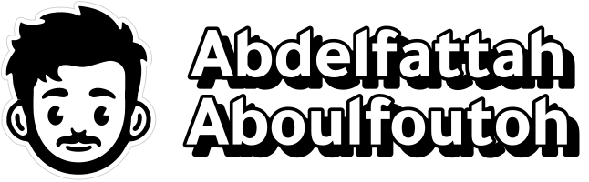
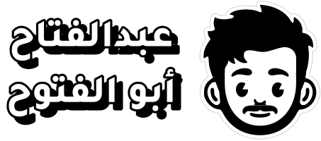
Vertical formats: posters, covers, profile cards, banners, packaging, anything taller than wide.
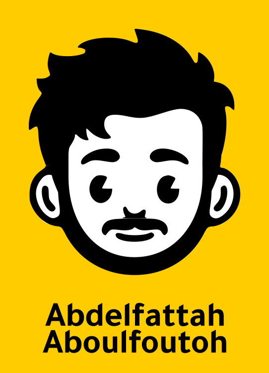
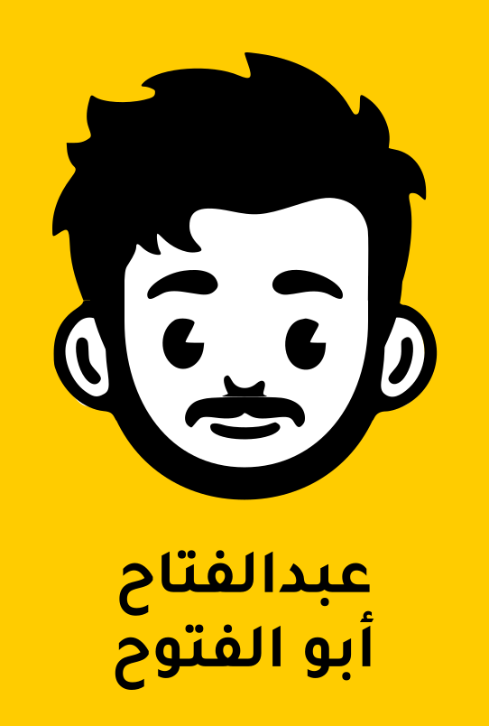
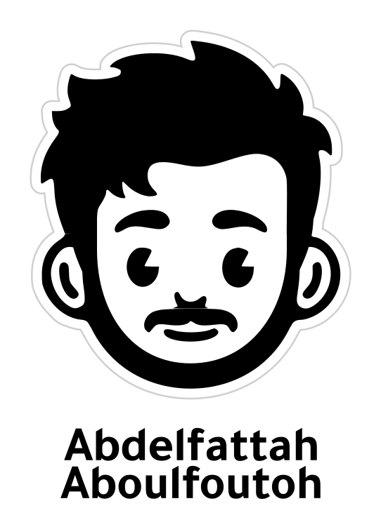
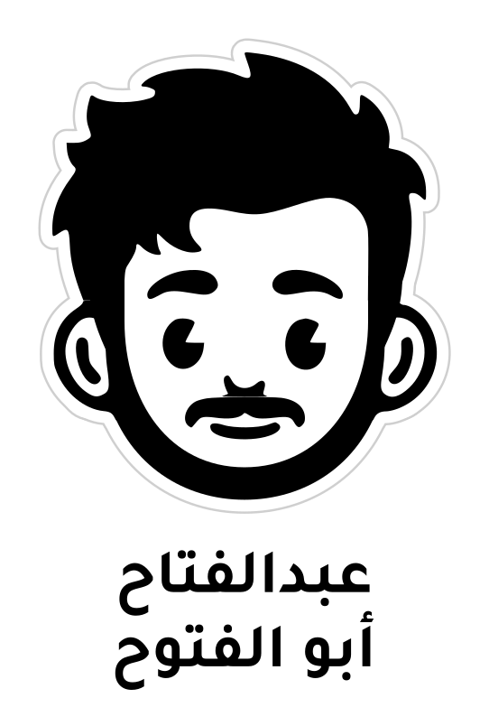
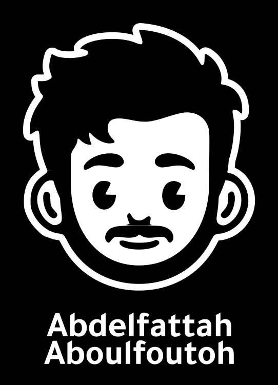
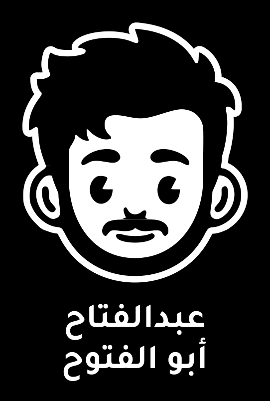
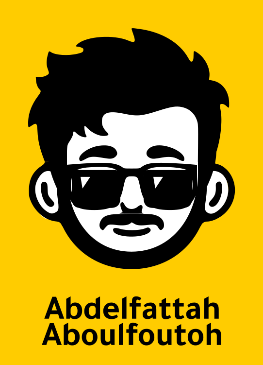
Loud and friendly: video thumbnails, stickers, merch, stories, event badges. Black offset on light, white on dark.
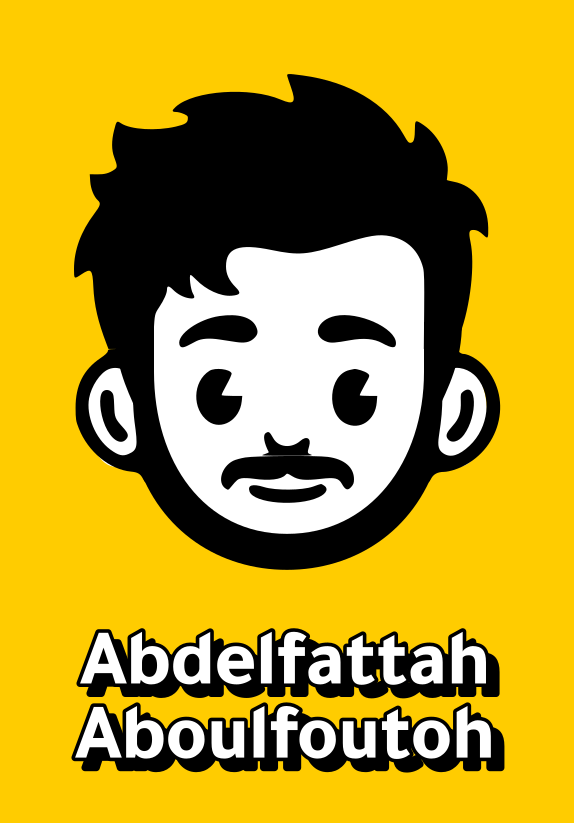
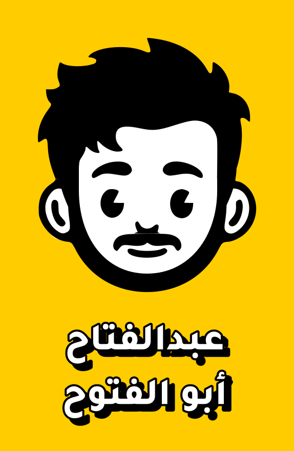
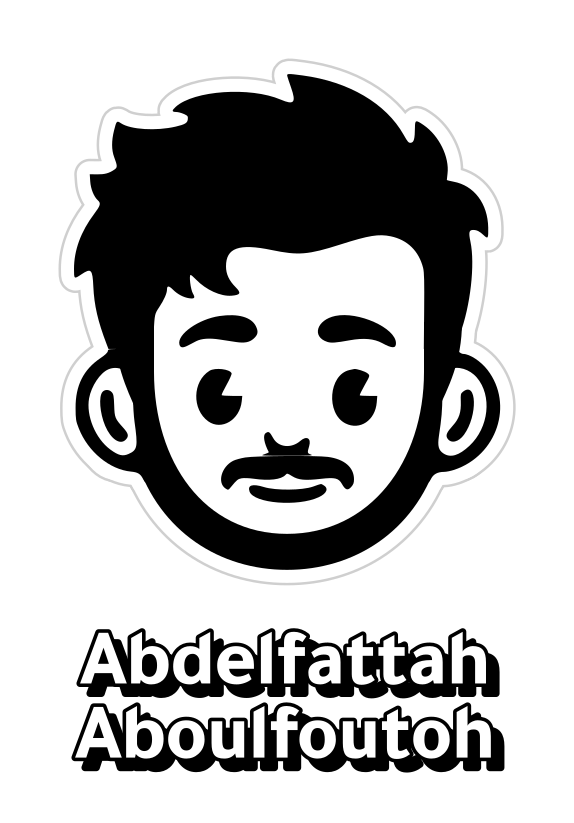
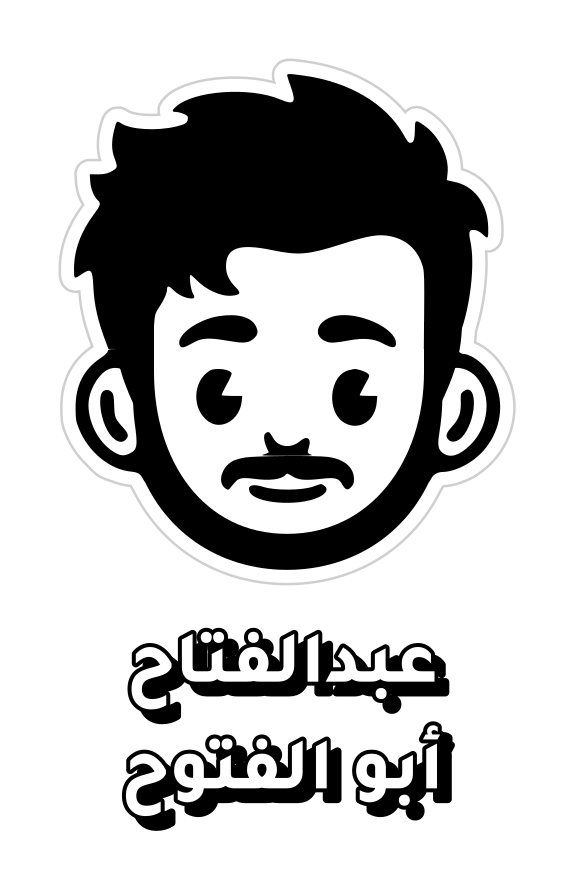
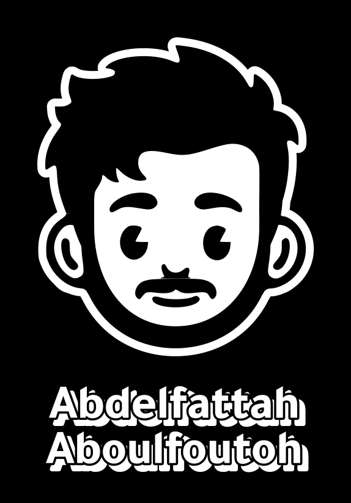
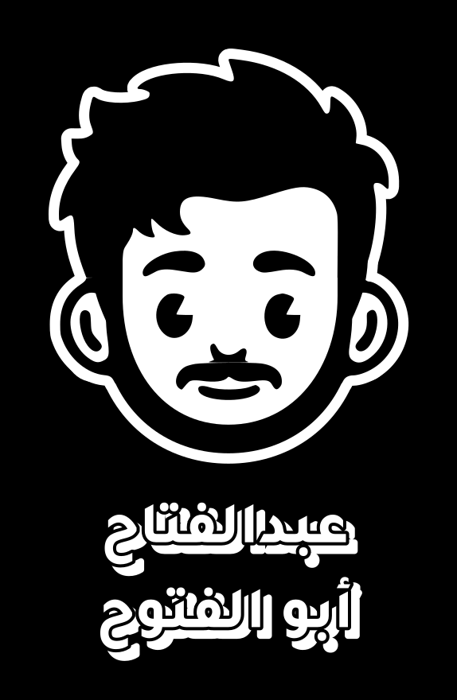
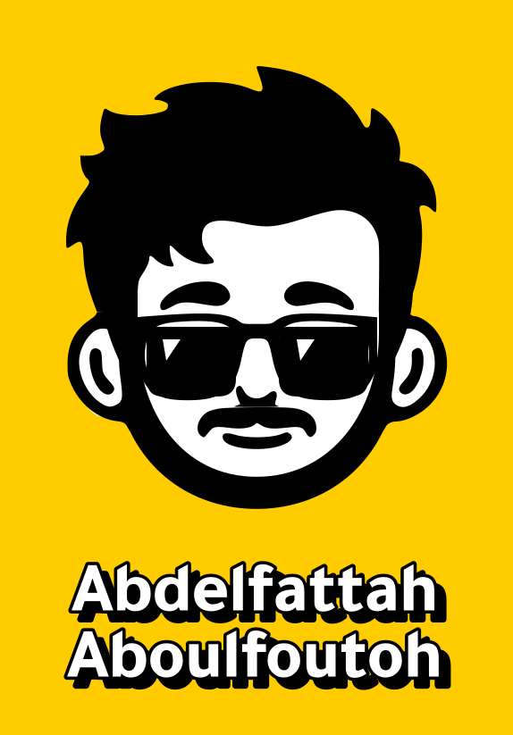